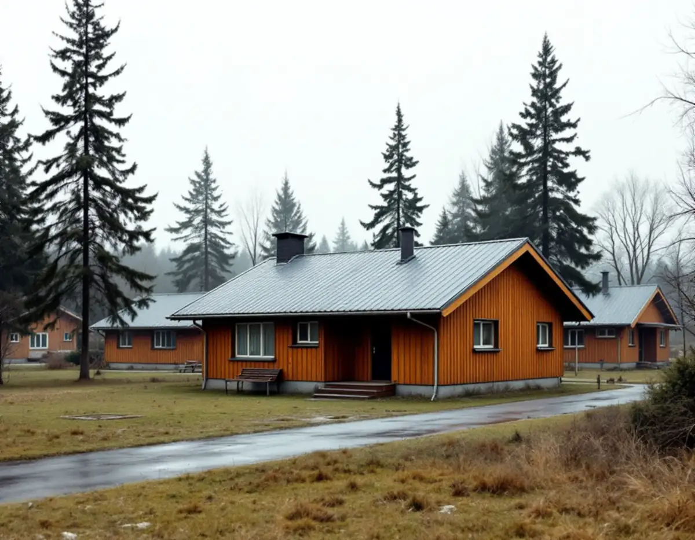
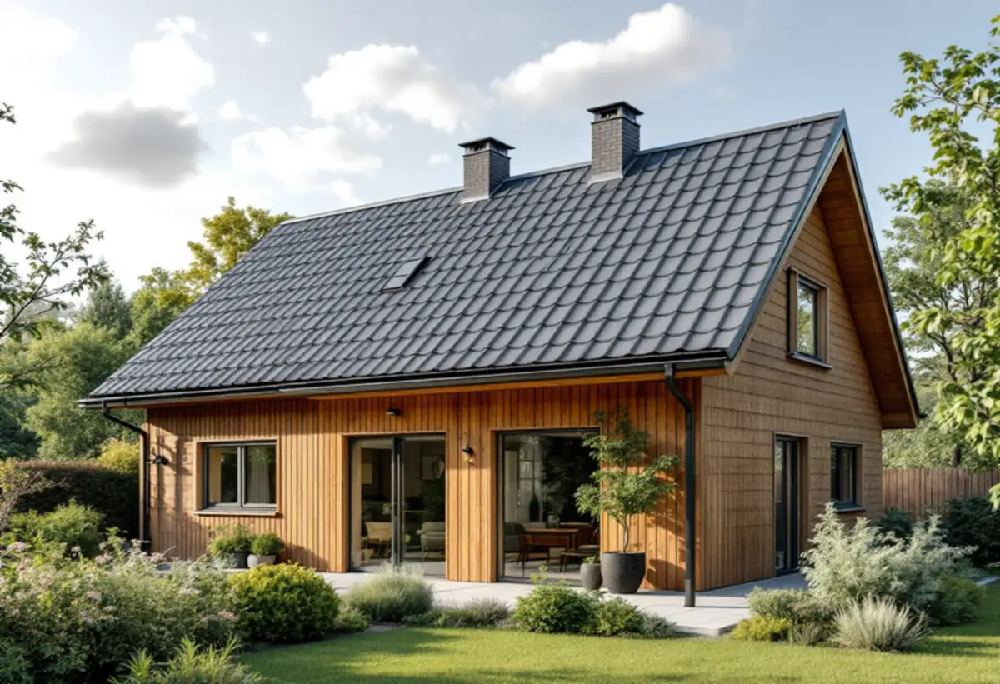

Platsbesök
Taket och husets byggår går vi igenom på plats.

Har huset i Hässelby byggts före 1982 kan det gamla taket innehålla asbest, och då ska det utredas innan rivningen börjar.
Skicka gärna en bild på taket.
Något blev fel. Kontrollera uppgifterna eller ring 08 12 410 276.
Pris: från 1 400 kr/m² inkl. material, före ROT-avdrag
Vi tittar på jobbet på plats innan du får offert.
Du ser vad som ingår och vad det kostar.
Vi drar av ROT direkt och sköter ansökan.
Geal Entreprenad AB, Bromma. Org.nr 559303-7566.
Geal Entreprenad AB byter tak på villor, radhus och kedjehus i Hässelby och börjar med att ta reda på vad det gamla materialet består av.
Stadens strategi för småhusområden beskriver hur många villor i Hässelby villastad på 1960- och 1970-talen ersattes av täta grupper av enhetlig småhusbebyggelse. Om Hässelby skriver strategin också att man i många områden prövade nya material, och att asbestcement, mer känt som eternit, var populärt.
Eterniten innehöll det hälsovådliga ämnet asbest och har i många fall bytts ut, enligt strategin. Boverket nämner takskivor, takpannor och fasadskivor bland de produkter där asbest kan finnas, och skriver att provtagning och analys är det enda säkra sättet att veta.

Arbetsmiljöverket skriver att man ska utgå från att alla byggnader som uppförts fram till 1982 kan innehålla asbest, eftersom asbest användes fram till förbudet 1982. Även senare byggnader kan i vissa fall innehålla asbest, eftersom produkter fanns kvar i lager eller importerades.
Vid minsta osäkerhet ska ett prov tas och skickas till ett laboratorium som analyserar det. Därför börjar ett takbyte på ett hus från den tiden med provtagning av det material som ska rivas.
Enligt Arbetsmiljöverket är det byggherre, projektör och arbetsgivare som ska se till att en undersökning och vid behov provtagning görs. Som husägare som beställer ett takbyte är du byggherre, och den som ska utföra arbetet ska få skriftlig information om det finns asbest i byggnaden.
En arbetsgivare som är det minsta osäker får inte låta någon börja förrän det är klarlagt, och ska då begära ett skriftligt besked från ägaren. Vi hjälper dig att beställa analysen och sammanställa beskedet, så att det finns svart på vitt innan ställningen sätts upp.
Ett företag som ska riva eller sanera asbesthaltigt material behöver tillstånd från Arbetsmiljöverket, och rivning av asbesthaltigt material på tak eller fasad utomhus är ett av exemplen. Förarbete, omhändertagande av avfallet och städning efteråt räknas också som rivning och sanering.
Asbesten ska så långt det går rivas först, innan annan rivning görs, och området ska vara avspärrat och skyltat. Visar provet asbest anlitas ett företag med tillstånd för den delen, och vi lägger det nya taket när saneringen är klar. Om villastadens tak i övrigt kan du läsa under takrenovering i Hässelby.
När det gamla materialet är borta ser vi underlaget: läkt, underlagstäckning och råspont. Skadat trä byts, och plåten vid takfot, nock och genomföringar görs om i samma arbete.
För radhusens fasader påpekar strategin att det i dag finns skivor utan asbest som gör det möjligt att behålla uttrycket. Samma tanke gäller taket: ligger huset i en grupp med enhetliga tak väljer vi ett material som liknar grannarnas. Om tjänsten i stort kan du läsa under takbyte och om husen i stadsdelen under takläggare i Hässelby.
Taket och husets byggår går vi igenom på plats.
Prov tas på misstänkt material och skickas för analys.
Sanering, rivning, underlag och nytt tak står var för sig.
Asbesthaltigt material rivs först av företag med tillstånd.
Underlaget ses över och det nya taket läggs.
Vi går igenom taket och lämnar dokumentationen.
Skatteverket räknar byte och reparation av takpannor, plåttak och hängrännor på ett småhus som rotarbete, och även sanering av asbest i samband med byggarbete. Att mäta asbest ger däremot inget avdrag.
Avdraget är högst 30 procent av arbetskostnaden, högst 50 000 kronor per person och år och högst 75 000 kronor tillsammans med rutavdrag. Material och resor ger inget avdrag. Geal drar avdraget direkt på fakturan.
Takets yta och lutning, om det gamla materialet innehåller asbest, hur mycket underlag som behöver bytas och vilket nytt material du väljer. En överblick finns i vad kostar ett takbyte. Efter ett gratis platsbesök får du ett skriftligt kostnadsförslag.
Byte av tegel-, betong- och plåttak.
Takbyte →Takbyte, takbesiktning och plåtarbeten.
Takläggare i Hässelby →Villastaden, Hässelby strand och gård.
Takrenovering i Hässelby →Styckade tomter, gränser och kartan.
Attefallshus i Hässelby →Källarbadrum, backventil och bostadsrätt.
Badrumsrenovering i Hässelby →Riva, bygga nytt och delad tomt.
Byggföretag i Hässelby →Villastaden och radhusen.
Fasadmålning i Hässelby →Villastad, sommarstugor och grupphus.
Fasadrenovering i Hässelby →Villor, radhus och grupphus.
Fönsterbyte i Hässelby →Radhusen i Hässelby gård.
Fönsterrenovering i Hässelby →Slipa trägolvet – eller lägga nytt.
Golvläggare i Hässelby →Golvet under mattan.
Golvslipning i Hässelby →Kök i villor och radhus.
Köksrenovering i Hässelby →Villastad, grupphus och radhus i Hässelby.
Målare i Hässelby →Plåttak efter eternit, rännor och beslag i Hässelby.
Plåtslagare i Hässelby →Altan, bod och plank i villastaden och radhusen.
Snickare i Hässelby →Ny tapet i grupphus och villor.
Tapetsering i Hässelby →Hus som vuxit i omgångar.
Tillbyggnad i Hässelby →Grupphusen, eterniten och ventilationen.
Totalrenovering i Hässelby →Eller ring 08 12 410 276, mån–fre 08–17.
Skicka gärna en bild på taket.
Något blev fel. Kontrollera uppgifterna eller ring 08 12 410 276.